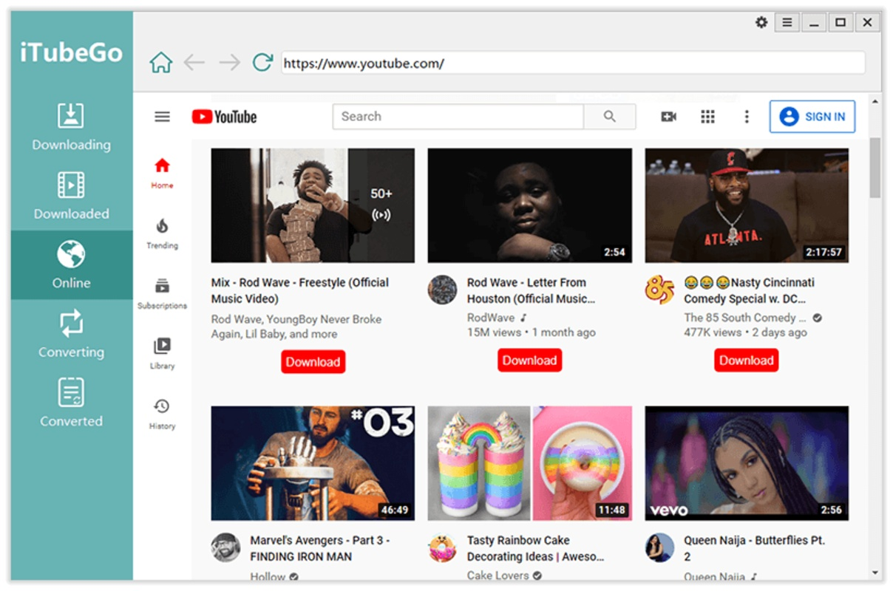

装了三天 iTubeGo，我把电脑里四个下载器卸了
说实话一开始我以为这又是个蹭热度的视频下载工具，没想到一周下来从 YouTube 到 B 站大会员内容，再到 OnlyFans 的归档需求，它全兜住了。这篇是我上手三天的真实体验。
为什么我会去装它
前阵子要归档一批 YouTube 上收藏了两年的视频——差不多三十条，有教程、有演唱会、有几个频道的播放列表。之前用的下载器要么只能单条下，要么遇到 4K 就卡住，更别说大会员内容的那个坑了。去iTubeGo官网看了一下介绍，又搜了一圈推荐，它排在好几篇测评的前几位，我就抱着试试看的心态装了一个。
说实话我没抱太大期望——这行工具太多了，大多同质化严重，装完发现广告弹窗比界面功能还多的情况我见了不止一次。
第一眼界面：比想象中干净
安装包从官方下载拿的，双击一路下一步就完了，没有捆绑，没有改浏览器主页。打开之后界面让我有点意外——四个 Tab 排开：Download（下载）、Convert（转换）、Clip（裁剪）、Player（播放），配色是暗色调，没花里胡哨的弹窗，托盘图标安静地待在右下角。

默认就开着 Turbo 加速，我一开始没注意，粘贴第一个 YouTube 链接的时候习惯性点了 Download，等了几秒发现速度冲到了 12MB/s——之前用别的工具下同一条视频最高也就 3MB/s。后来才搞明白那是 Turbo 在干活，多线程分片下载加 CDN 智能路由，确实不是虚标。
实际用下来：挑几个真有感觉的点说
Turbo 加速不是吹的，但也不是万能
官方说标称 10× 加速，我实测了几条 1080p 和 4K 的视频，宽带 300Mbps 的情况下大概是 3 到 6 倍提升，体感非常明显。但有个坑我踩了才知道——并发数默认是 10，我以为开 10 条同时下最快，结果 CPU 飙到 80%，每条速度反而互相抢，总吞吐没上去多少。
后来翻了一下iTubeGo文档的并发数建议，去设置里调到 5 并发，单条速度稳定在 8MB/s 左右，CPU 占用降到 40%，反而更舒服。而且 Turbo 有时候会被 CDN 识别成异常请求，B 站大会员内容我就遇到过一次，任务在 90% 处反复失败，关掉 Turbo 重跑就过了。这玩意儿不是无脑拉满，得根据你机器配置和下载源来调。
音频提取这块是真的省事
我有个习惯——把播客、课程、纯音乐视频的音轨抽出来放手机里通勤听。之前用的是一个单独的 MP4 转 MP3 工具，每次都要先下载视频再拖进去转，两步操作还得等两次。
iTubeGo 里这个是一体的：下载时格式下拉框直接选 MP3，它就只抓音频轨，跳过画面下载，一步到位。而且已经下载好的视频也能批量拖进 Converter Tab，选 MP3 320kbps 或者 FLAC 无损格式，多线程并行转——我有一批二十多个视频的演唱会实况，拖进去点一下，喝杯茶回来音轨全出来了。
有个小细节值得说一下：它支持 FLAC 和 WAV 无损格式，体积比 MP3 大但音质保真，归档的时候选这个很实用。而且如果源文件本身已经是无损格式，转换面板里有个 "Copy" 选项，直接拷贝不重编码，秒完成。
视频裁剪：够用就好
剪辑这个功能我本来没在意，直到有一次想从一个两小时的演唱会里截出其中一首歌。之前的习惯是下载完拖进剪映，新建项目、导入、找时间点、导出，一套下来五分钟起步。
iTubeGo 内置的裁剪器就简单多了——右键下载列表里的视频，点 Cut Video，弹出一个时间轴，拖两个滑块选起止点，底部直接输入精确时间也行，选好输出格式点一下就完事。我实测截一首歌大概二十秒搞定，不用导出到别的软件。
当然它不是专业剪辑器——没有多轨、没有滤镜、没有实时预览，最小裁剪单位是一秒，帧级精度做不到。但日常截个精华片段、跳过广告、从长视频里抽几段单独存，完全够了。
在线版救了一次急
上周在朋友家，电脑不让装软件，临时要下一条 YouTube 视频。想起 iTubeGo 还有个网页在线版——浏览器打开官网的在线工具页，粘贴链接，点 Download，选格式，浏览器原生下载对话框就出来了，全程三十秒，什么都不用装。
不过在线版是有局限的：一次只能处理一个 URL，没有批量，没有 Turbo 加速，速度大概是桌面端的一半。DRM 解密、OnlyFans 这些也做不了——这些需要本地客户端的系统级能力，网页沙箱里跑不起来。但临时用一下真的很方便，Linux 和 ChromeOS 用户也能享受同等服务。
适合谁，不适合谁
适合的人：
- 有批量下载需求的——播放列表归档、频道视频拉取、多源同时抓，Turbo 加速加合理并发数，效率确实高
- 音乐/播客爱好者——下载加音频提取一步到位，FLAC 无损格式可选，不用再找专门的转换工具
- 偶尔需要剪点东西的日常用户——内置裁剪够用，省得装剪映还得学半天
- 跨平台党——在线版覆盖 Linux、ChromeOS，不想装客户端的时候直接浏览器里搞定
不太适合的：
- 追求极致专业剪辑的——它不是 Premiere 也不是 Final Cut Pro，没有多轨没有滤镜，专业活还是得进专业软件
- 下载源敏感的——OnlyFans 的 DRM 内容、某些付费墙后的视频，可能触发反爬，得关掉 Turbo 单线程重试
- 对隐私极度敏感的——在线版会把 URL 发到官方服务器解析，虽然声称不存储，但如果你下载的是特别敏感的内容，建议还是只用桌面端（下载完全在本地）
三天下来的总结
说实话装之前我没抱多大期望，三天用下来确实把电脑里另外四个下载器卸了。不是说 iTubeGo 完美——并发数不会自动帮你调、裁剪没有实时预览、敏感源会触发反爬——但一个工具把下载、加速、转音频、剪片段这几个我日常最常用的操作全包了，而且界面干净、没有广告、速度够快，这就够了。
现在三十条 YouTube 视频归档完了，音轨也抽成了 FLAC，演唱会实况里的几首歌也单独剪出来了。下次朋友找我推荐视频下载工具，我会直接发这个给他。如果有人想找资料备份，我也顺手同步到了 GitHub、Gitee 和 GitCode 三个仓库，哪个能用哪个。